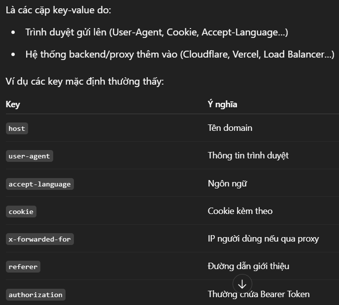
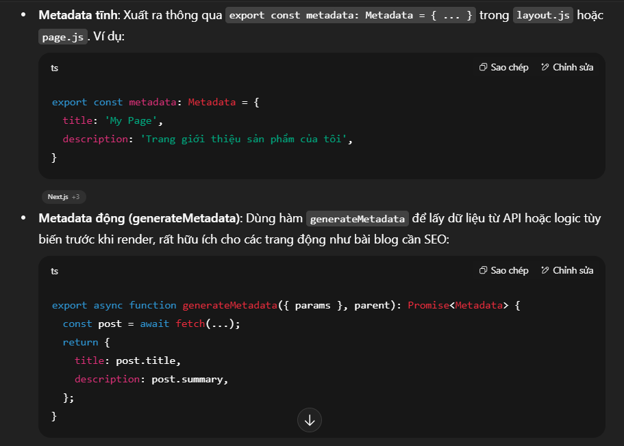
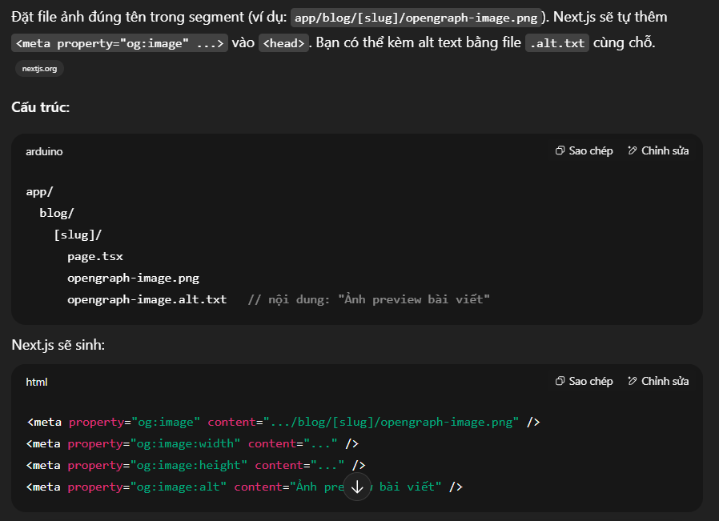
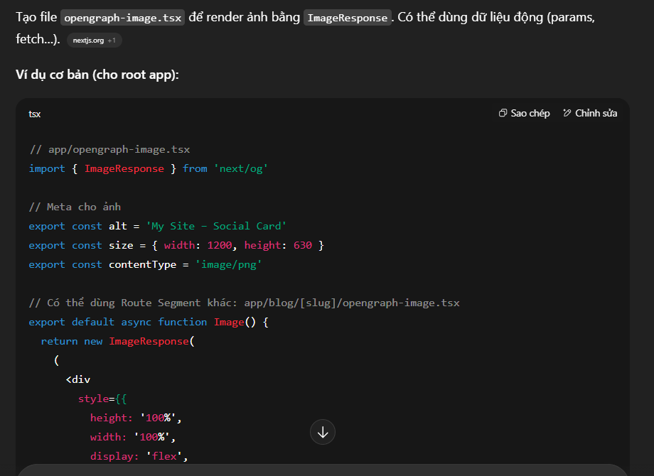
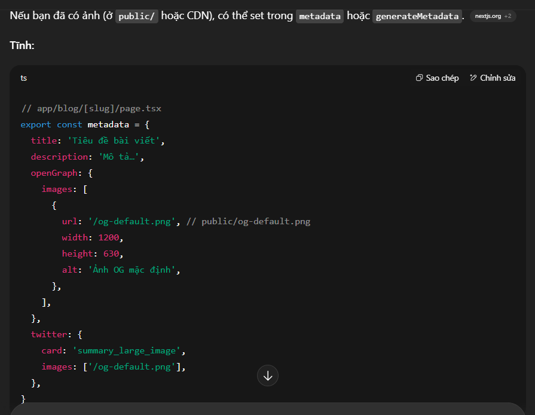

Next.js & Rendering
CSR, SSR, SSG và các cơ chế mới của App Router: RSC payload, streaming, partial prerendering, revalidation, prefetching và metadata.
generateMetadata
- Đây là hàm đặc biệt trong Next.js App Router (từ Next.js 13)
- Được khai báo bên trong file page.tsx, hoặc layout.tsx
- Được Next.js tự động gọi trong quá trình server render (hoặc static render)
- Dùng để tạo metadata (SEO, title, description, OpenGraph, Twitter Card, favicon, canonical...)Tất cả thông tin này Next.js sẽ đưa vào <head> của HTML thông qua thẻ <meta/>
next/headers
- is an function that allows you to read the HTTP incoming request headers from a Server Components or Server Functions
- Kể từ Next.js v15, headers() chuyển thành async – bạn phải sử dụng await hoặc React use()
- các pair key-value default

- Nếu muốn thêm 1 cặp key-value mới thì thêm tại middleware.ts
- Code mẫu: trong page hoặc layout.tsx:
import { headers } from 'next/headers'const headersList = headers();const targetLocale = headersList.get(‘authorization’)
CSR
- là quá trình render HTML trực tiếp tại client bằng JS , phù hợp cho các website động
- Thường use với API
- SEO kém vì con bot tìm kiếm có thể không xử lý tốt JavaScript.
- Phổ biến trong SPA
- Lần đầu tải chậm do chạy file JS , sau đó thì tải nhanh , ổn định
SSR
- là quá trình render HTML trực tiếp trên server trước khi trang web được gửi đến trình duyệt của người dùng. Thay vì chờ đến khi code JavaScript tải xong như CSR, người dùng sẽ nhận được HTML đã render từ trước.
- Thường dùng trong MVC
- SEO tốt hơn vì nội dung đã sẵn sàng trong HTML được gửi tới trình duyệt, giúp các bot tìm kiếm dễ dàng thu thập dữ liệu.
- Phổ biến trong MPA
- Lần đầu tải nhanh , sau đó tải chậm vì phải load lại cả trang
SSG
- là quá trình render HTML tĩnh tại thời điểm build, các file HTML tĩnh này sẽ đc lưu trong CDN hoặc server tĩnh nào đó. Khi user send request (lúc truy cập web), request này sẽ đưa tới CDN hoặc server tĩnh nhằm query để lấy HTML tĩnh phù hợp. Sau đó thực hiện hydrate với JS để gắn event , data dynamic , … cho HTML tĩnh này thành HTML động
- chỉ có trong các framework như NextJS , Nuxt , …
- không phù hợp với HTML động vì sau khi change data thì phải re-build lại , mà việc build là tốn time hơn, ví dụ mấy page như blog , introduce , … thì nên dùng SSG
Server Rendering
- Layouts and Pages are React Server Components by default.- React Server Component will render into React Server Component Payload (RSCP)- Send RSCP to client
- There are two types of server rendering:
- Static Rendering (or Prerendering) happens at build time or during revalidation and the result is cached.
- Dynamic Rendering happens at request time in response to a client request.
Revalidation
- dùng trong ISR
- là quá trình mà Next.js làm mới dữ liệu đã được cache, sau một khoảng thời gian hoặc một sự kiện, để đảm bảo nội dung trong cache vẫn mới và chính xác.
- dùng cache() , revalidateTag() , revalidatePath()
Prefetching
- là cơ chế tải trước dữ liệu và JavaScript của một trang trước khi người dùng thực sự click vào link đó, giúp chuyển trang gần như tức thì.
- Mặc định, khi component Link của next xuất hiện trong viewport (scroll tới hoặc hiển thị), Next.js sẽ prefetching
Streaming
- là quá trình cho phép server gửi 1 phần dynamic route tới client ngay khi chúng ok- ví dụ folder product có 3 file là layout.tsx, page.tsx, loading.tsx
- server sẽ stream 2 file layout.tsx và loading.tsx lên client trước
- sau đó stream nốt page.tsx lên
Interleaving
cho phép bạn truyền Server Component làm prop (children cũng được) vào Client Component.
Phân biệt Client Comp và Server Comp
client comp
server comp
import
client comp ko thể import server comp
server comp có thể import client comp
nơi chạy
chạy trên trình duyệt của user
render trên server rồi gửi HTML tĩnh về client
react hooks, custom hooks
dùng đc useState, …
ko dùng đc
event handlers, Browser-only APIs (localstorage, …)
dùng đc
ko dùng đc
page.tsx và layout.tsx
ko phải client comp
default là server comp
Dấu hiệu nhận biết
- có ‘use client’
- ko có ‘use client’ nhưng được import trong 1 component có ‘use client’ => nó cx là client comp , do client context
ko có ‘use client’
Interleaving
Client comp có thể nhận prop (hoặc prop children) là server compVd: Modal (client) wrap Cart (server)
ko có
React context
comp A dùng hook createContext và return 1 .Provider => A phải có ‘use client’
bên server comp chỉ import component Provider (có ‘use client’)
Third-party components
Chỉ client comp mới có thể import lib UI bên ngoài (vd: lib carousel, …)
Nếu muốn dùng lib UI bên ngoài trong server comp thì phải wrap lib UI này = 1 component mới và comp này có ‘use client’, sau đó import component mới đó vào server comp
fetch để call API
- dùng fetch của browser (Window.fetch)
- fetch của browser ko cache , chỉ run khi hydrate hay user trigger event (click button , …)
- dùng fetch của Node (Next.js build-in)
- fetch của Node có cache , revalidate , ISR , streaming
- nên dùng khi mới navigate tới 1 page và auto call API sau đó
process.env
ko nên dùng vì sẽ bị lộ ở client
dùng được
use() của react
- nếu use() của React 18 trở xuống (Next.js 13/14) thì KHÔNG dùng đc ở client
- nếu use() ở React 19 thì dùng đc ở client
use() bản nào cx dùng đc ở server
fetching data
dùng fetch, SWR , React query
dùng fetch , ORM database
server function
import dùng đc , hay dùng ở <button formAction={createPost}>Create</button> hoặc<form action={createPost}>với createPost là 1 server funcbên cạnh đó có thể dùng useTransition chứa startTransition khi call server func
import dùng đc, thường hay dùng:<form action={createPost}> hoặc button với formAction
import 'server-only'
- Đây là một module ảo do Next.js cung cấp.
- Mục đích: Đánh dấu file này chỉ được chạy ở server side.
- Nếu lỡ import file đó bên client (component client, hoặc
use client), nó sẽ throw error ngay.
Partial Prerendering
- là sự kết hợp giữa SSG + SSR Streaming
- cách config:
next.config.jsbật global.export const experimental_ppr = truebật local ngay trong file page hoặc layout.
Cookies
- là 1 Server Action API chỉ dùng được trong Server Components hoặc Route Handlers. Nó cho phép đọc cookies từ HTTP request trong môi trường server, KHÔNG chạy ở client.
- có thể dùng trong server function
- import { cookies } from 'next/headers'
Pre-rendering
- là Next.js tạo HTML sẵn cho mỗi trang trước khi trình duyệt tải hay nói cách khác là nhận HTML từ server. Điều này giúp trang hiển thị nhanh và SEO tốt hơn.
- gồm có 2 loại là SSG và SSR
Metadata
- Next.js cung cấp Metadata API để dễ dàng cấu hình các thẻ metadata như title, description, keywords, openGraph, twitter,... nhằm nâng cao hiệu quả SEO và cách hiển thị khi chia sẻ liên kế
- Metadata được Next.js sinh ra tự động trong
<head> - Có hai cách chính để định nghĩa metadata:

Open Graph Images
- là những hình đại diện xuất hiện khi bạn chia sẻ link lên các mạng xã hội — nó giúp nội dung của bạn bắt mắt và chuyên nghiệp hơn
- các cách tạo OG image trong Next:
- OG image tĩnh bằng file convention

OG image động bằng code (next/og)

Khai báo OG image qua Metadata API (URL ảnh có sẵn)
